6.810 Engineering Interactive Technologies (fall 2020)
Problem Set Series: Multi-Touch Pad

Problem Set 1
In the first part of the problem set, you are going to do the following steps:
- (1) Create Processing User Interface for Generating Fabrication Files
- (2) Inkjet Print Top and Bottom Electrode Layers
- (3) Assemble Top and Bottom Electrode Layers
- (4) Connect Top and Bottom Electrode Layers to FCP connectors
- (5) Build Multi-Touch Sensing Circuit
Check before you start: Do you have all the hardware?
Before you get started, check if you have all of the following in your bag:
- ESP32 microcontroller, breadboard, and wires
- 8 x 100Kohm resistors (one for each receiver pin)
- one multiplexer
- two FPC connectors
In addition, the following items will be provided when you come in for printing and assembling the multitouch pad:
- two transparent sheets for conductive inkjet printing of the top and bottom electrodes
- tattoo transfer paper that acts as a thin layer of glue to attach the top and bottom electrode sheets to each other
- one transparent sheets to cover up the top electrodes
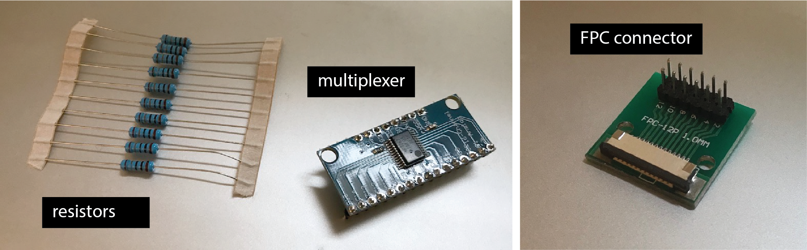
(1) Processing User Interface for
Generating Fabrication Files
In the first part of this problem set, you will write a user interface in Processing that will automatically generate the fabrication files for making multi-touch pads of different dimensions. In particular, a user will be able to input parameters, such as the number of electrodes of the multi-touch pad and then automatically receive the matching fabrication files, i.e. 2D drawings of the required circuits in .pdf file format that the user can then send to their 2D printer for conductive inkjet printing. You will implement this interface in Processing from scratch.
We will be using the classical two-layered diamond pattern that is commonly used for mutual-capacitive touch sensing.
As explained in lecture, this means that your multi-touch pad has two layers that are printed separately.
One layer contains the rows of electrodes, the other layer contains the columns.
Each row/column consists of multiple electrodes and has a single wire at the end.
Once both sheets are printed, you layer them on top of each other (with a bonding & isolation layer in between) to build the final circuit.
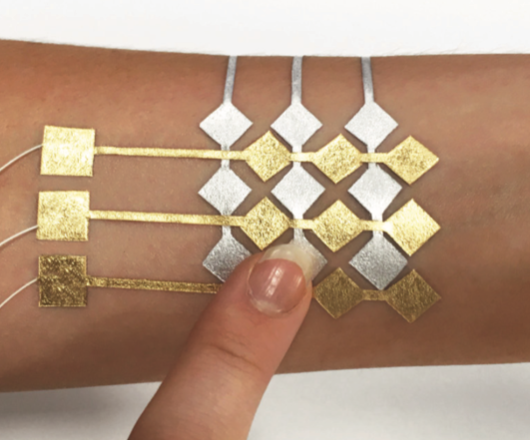

Required User Interface Functionality
In the user interface, the user should be able to select:
- the desired number of electrodes in x-direction (default value: 10 electrodes)
- the desired number of electrodes in y-direction (default value: 10 electrodes)
- the edge length of the electrodes (diamond shape) in mm (default value: 6mm)
Other parameters that you need to set in your code but don't have to display in the UI, are:
- the spacing between adjacent electrodes in mm (default value: 1mm)
- the spacing between non-connected electrodes, i.e. rows and columns, in mm (default value: 0.5mm)
- the thickness of the wires inside of multi-touch pad that connect electrodes, in mm (default value: 0.3mm)
- the thickness of the wires outside of multi-touch pad that connect to FPC connectors, in mm (default value: 0.5mm)
- the spacing of wires on the FPC connector in mm (we are using the 1mm in FPC spacing, notice that the board has two sides and could also be used for 0.5mm if the 0.5mm connector was soldered on the other side. For more details, please look at the data sheet of the FPC connector here)
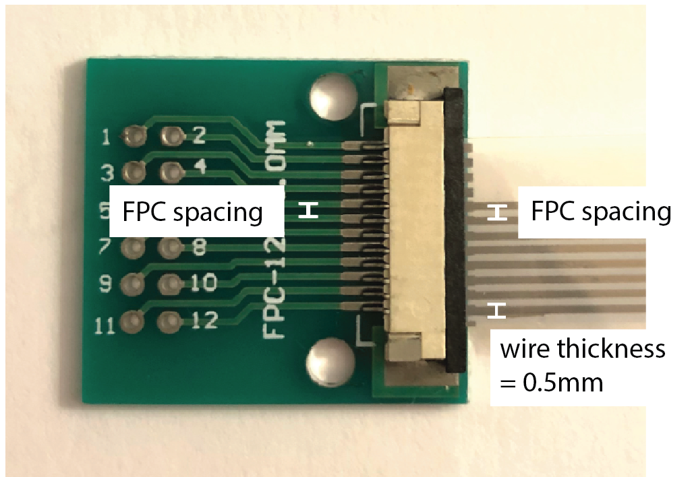
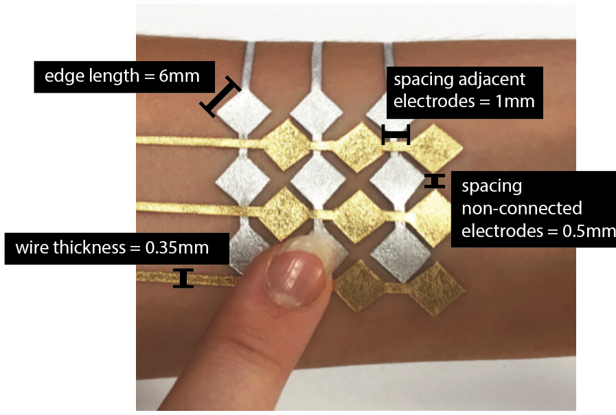
The user interface should only allow the user to select only reasonable numbers using the input elements:
- for each input field listed above, think about what is a reasonable lower and upper bound (i.e. min/max values) given the hardware you have available for the pset
- write a short explanation why you picked the lower/upper bounds for each field and submit it using this google form (before you fill out the google form, you may want to read the rest of pset1 to understand more about the hardware you have available)
- implement the lower/upper bounds in your user interface, i.e. the user should either not be able to select values outside the lower/upper bounds (i.e. you only offer a selection of valid numbers) or if your UI allows to enter any value even invalid ones, then your user interface needs to show the user a warning that the value is invalid and reset to the last valid value
Finally, the user interface should have a preview and export function:
- one button to switch between the design's top and bottom layer view, i.e. clicking the button should either show the top layer or the bottom layer so the layers can be looked at individually
- one save button, which when clicked saves the generated electrodes into two .pdf files (called bottom-electrodes.pdf and top-electrodes.pdf), one for the rows of electrodes (bottom sheet) and one for the columns (top sheet)
- make sure the exported files have all settings correctly set for conductive inkjet printing (if you don't remember, go back to Lab1)
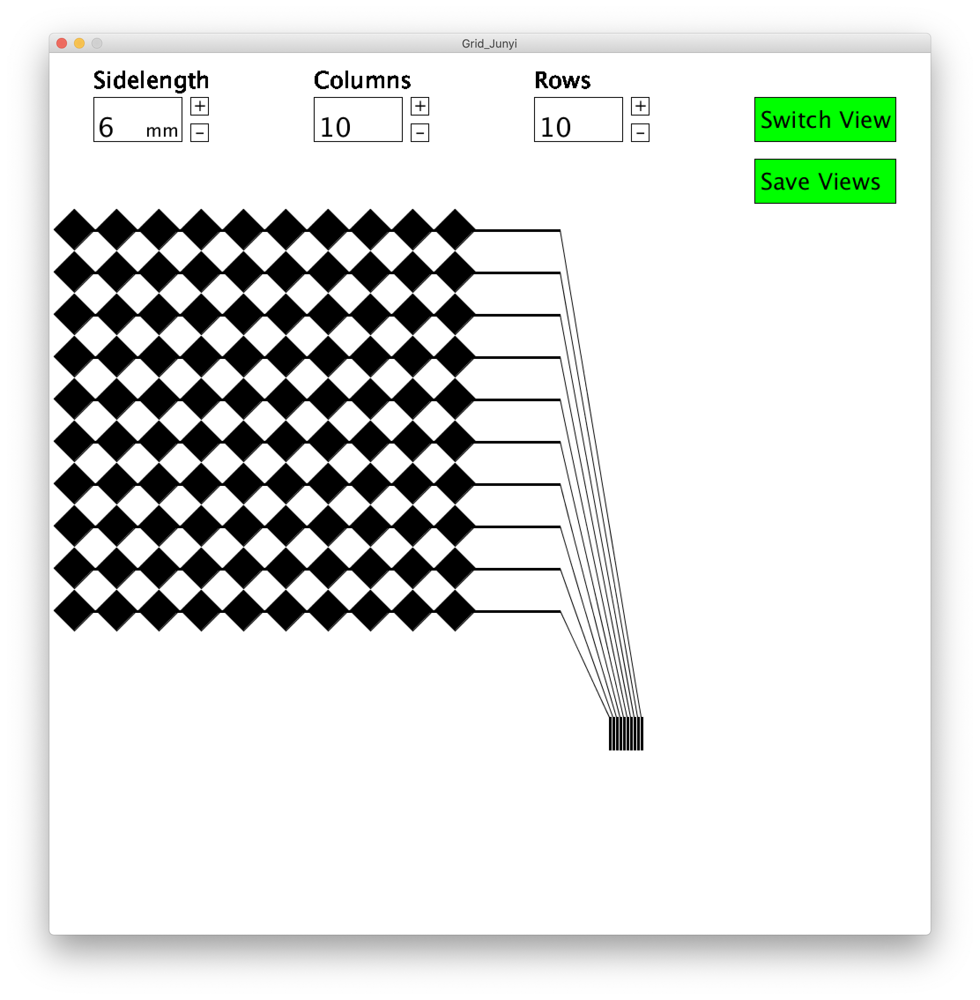
The switch top / bottom view function should look like something similar to the following:
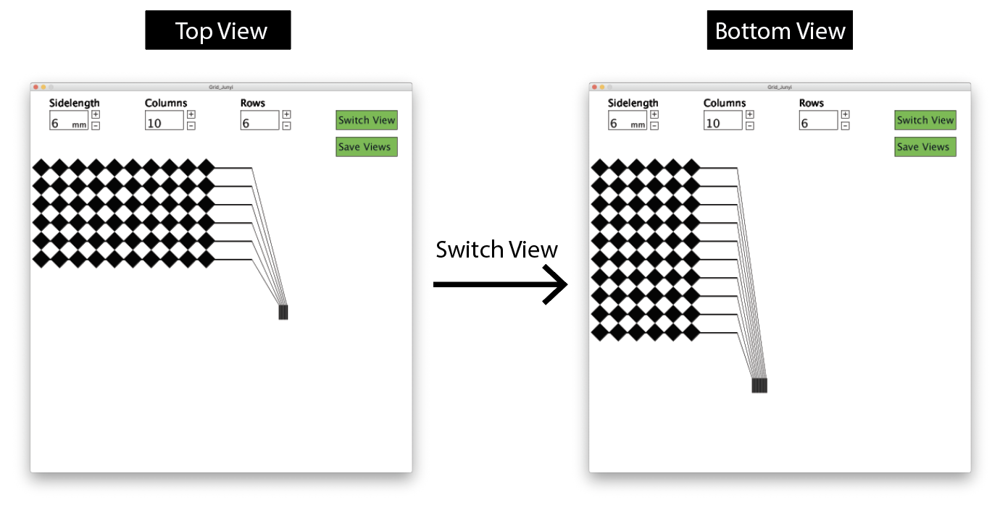
Setting the Processing window to the right resolution for printing
Since the multi-touch pad design is printed in millimeter but Processing handles everything in pixel, you first need to figure out a conversion factor between pixel and millimeter to determine the Processing window size.
Note that Processing uses a fixed dots per inch measurement.
On Windows, you are most likely to encounter a 96 dpi resolution.
On Mac, you are also most likely to encounter a 96dpi resolution but it may also be 72dpi. Wikipedia thinks it is 72dpi, however, according to our own tests on Mac, it was 96dpi, i.e. the same as on Windows.
(Note that the resolution of the Processing sketch window is different from the screen resolution pixel per inch, which usually are around a couple hundred nowadays, this is set by the operating system and mainly used for programs heavy on typography like Microsoft Word).
If you are unsure about the right resolution, you can do the following test:
Create a window in Processing of any size and draw a rectangle into the window using a fixed pixel size (e.g. rect(96,96) = 96 x 96 pixels).
Export the square using your implemented .pdf export function and print it out with a normal inkjet printer. While printing make sure you don't scale the image and instead print it with the "Print Entire Image" setting which keeps it at its exported size.
Next, measure the output with a ruler and determine how many inch it is (e.g., let's say it was 1 inch).
Finally, you can calcuate Processing's dpi by calculating the pixel to inch conversion factor based on this, which in our case is 96dots/1 inch = 96dpi.
Since our inputs are in mm, you still need to convert the dpi to dots per mm. For this, simply divide by how many millimeters are one inch (1 inch = 25.4mm). Thus, we will have 96dpi / 25.4mm = 3.78 dots per mm.
So if you draw a rectangle of 100 pixel it will be 100pixel / 3.78 dots per mm = 26.46mm.

Drawing the Top and Bottom Electrodes and Wires
You may find it helpful to look at the following Processing classes to draw the top and bottom electrodes and wires:
Creating User Interface Input Elements
For the UI elements, we do not use an external library and instead use a simple trick:
We draw the UI elements as regular graphic shapes (e.g. rectangles), add a text where needed to display numbers, and then use mouse-click and drag events to update the UI elements.
Testing your Program
When you are done, make sure you test your user interface by exporting several different multi-touch pad sizes, e.g. 4x10, 12x6, 5x5.
If you are unsure if everything has the right dimension, use a regular color printer to print out your design and measure it with a ruler.
(2) Inkjet Print Top and Bottom Electrode Layers
Once your circuit design tool is ready, export a multi-touch pad design of 8x9 electrodes from your user interface.
With the top layer and bottom layer combine together (8x9 electrodes + 9x8 electrodes), we have a 8x9 multi-touch pad.
Go to an office hour to inkjet print the top and bottom layer of your multi-touch pad.
(Note that the FPC connectors and the multiplexer in section 4 and 5 need soldering, so if you come in for printing you may also want to solder the header pins for those components on in one sitting rather than coming in multiple times.)
Remember you need to print two sheets, one for column and one for rows.
While printing, make sure you don't scale the image and print with "Print Entire Image" setting (see screenshot above), so that the image prints out accurately.
(3) Assemble Top and Bottom Electrode Layers
Once you printed both sheets, you need to assemble them on top of each other.
Please come to an office hour and we will do this together. Ideally you do this right after printing the two sheets, so you don't have to come in again.
Note, that both electrode sheets should have the conductive side facing upwards towards the user.
Place them on top of each other ***(place the layer with 9 connecting wires on the top)***.
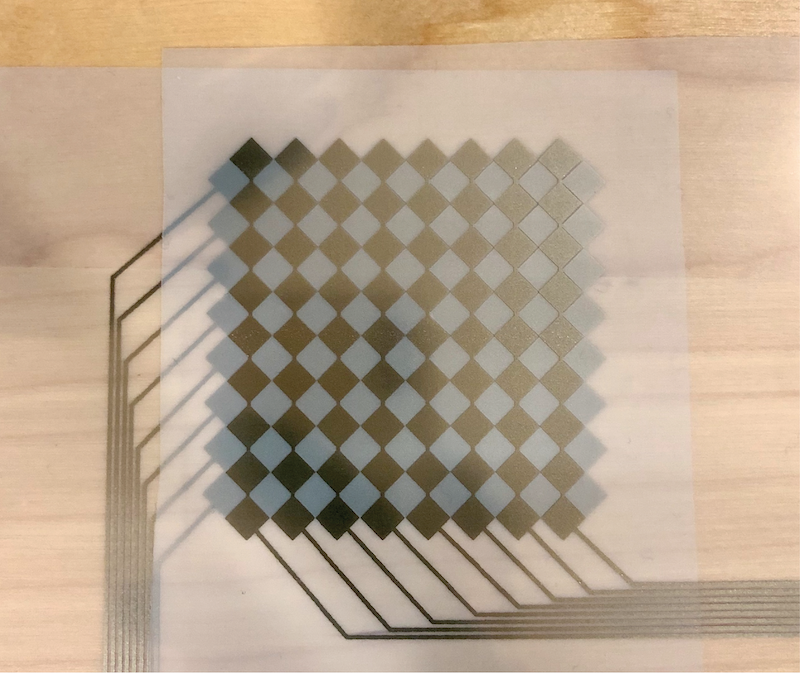
Once you made sure both electrode sheets face upwards with the conductive side, you will glue them together using the procedure described below.
While you could simply use double-sided transparent tape, the tape has a certain thickness to it and the more spacing is between the electrode layers the worse the sensing will be. Keep in mind that the electrodes are already spaced out by the thickness of the sheet on which the electrodes were printed. To keep the glue layer as thin as possible, you will thus not use double sided tape but instead use the adhesive of temporary transfer paper.
Note that you are going to glue only the electrode touch area but not where the wires are routing.
The alignment between the top and bottom electrodes is really critical for receiving an accurate sensing signal, thus before you glue them together you need to make sure everything is aligned properly!
To help with this, use scotch tape to tape one side so that the relative positions are fixed.
Flip the top layer up, so that the bottom layer is exposed.
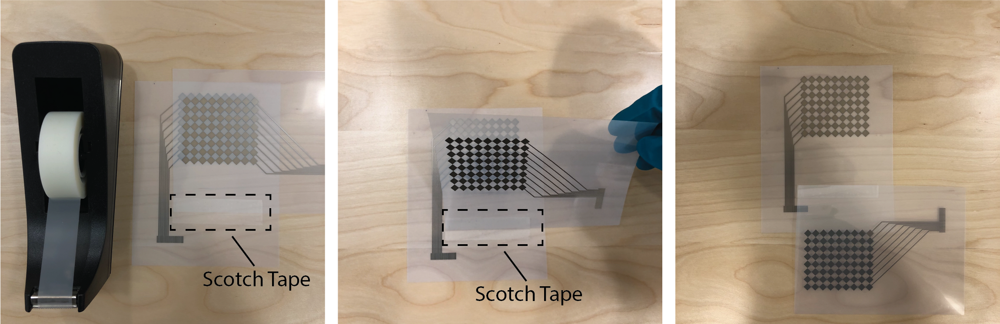
Next, you need to prepare the tattoo transfer paper.
For this, pull off the protective cover from one side of the tattoo transfer paper, then attach the now exposed sticky side of the tattoo transfer paper to the bottom electrodes. Next, remove the other protective cover from the other side to reveal the other sticky side. Now flip back the top electrode layer to make everything stick together.

Finally, since the conductive side of the top sheet is facing towards the user, the top electrodes are still exposed and you need to cover them up to prevent the user from touching them directly. For this, you will add a transparent film on top, which we will also give you at the office hour. You can attach the transparent sheet by using scotch tape again.

(4) Solder and Connect the FPC Connectors
Once you have the multi-touch pad printed and assembled, you need to connect its wires to a breadboard so that it can be connected to the rest of the circuit. In the labs, we used crocodile clamps but the use of crocodile clamps for such fine spacings as we have here is really impractical (and perhaps even impossible).
For this reason, we will use a Flexible Printed Circuit (FPC) Connector.
FCP Connectors are used for connecting (surprise) flexible printed circuits to the rest of the rigid circuit.
In our case, we connect the silver printed circuits to the main circuit.
In addition, FPCs also allow us to connect the small wires to something a little more managable with regular breadboard wires.
The FPC connector has high resolution connectors on one side, which we will use to connect to the inkjet printed circuit, and on the other side has more widely spaced connectors, which we can use to connect to our breadboard.
We bought you two FPC connectors from here.
When you buy them, they look like the image below.

Note that they don't yet have header pins on them, so you need to add them yourself.
You have some header pins in your fabrication bag.
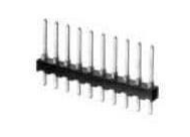
Go to an office hour to solder on the header pins (note that the multiplexer in the next step also needs soldering, so you may want to do both solder todos in one sitting rather than coming in twice).
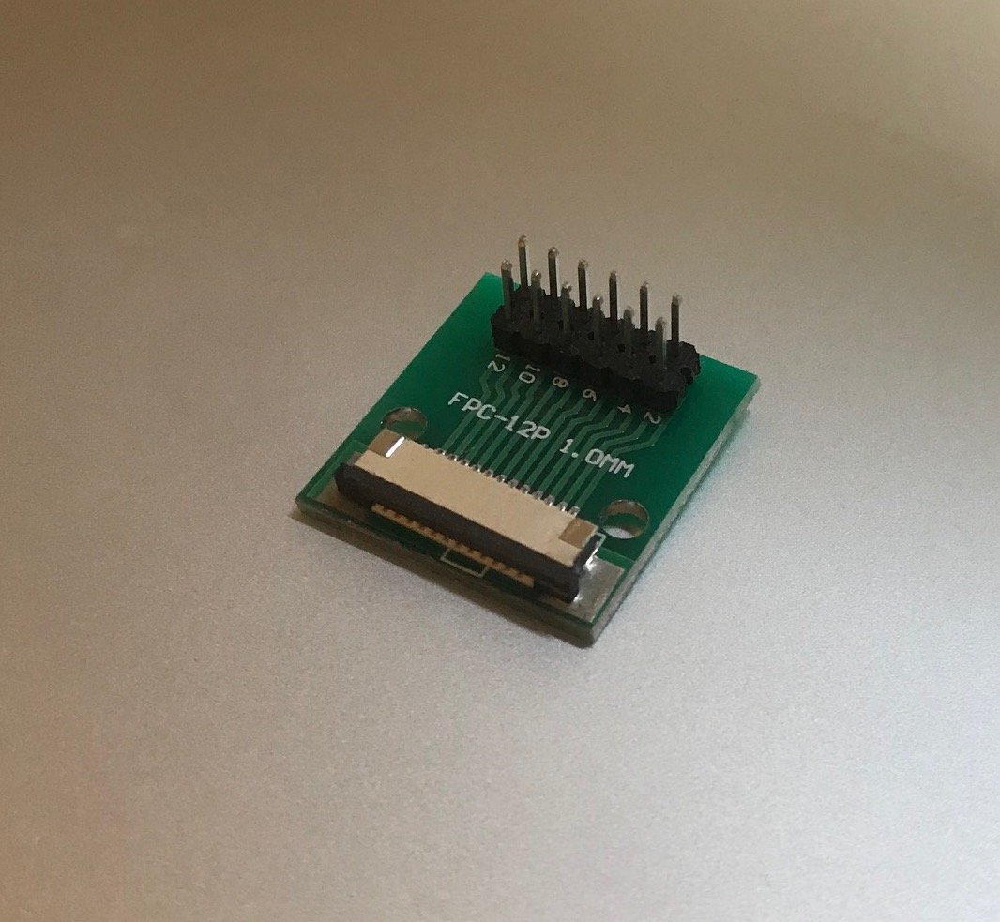
Next, connect the FPC connector to your inkjet printed circuit.
Before you can do this, you need to first cut out the multitouch pad.
In particular, when you cut out the connector area pay extra attention that it will fit inside the FPC connector (see images below).
Also check that the little pins inside the FPC connector head align with the traces on the piece you are cutting out.
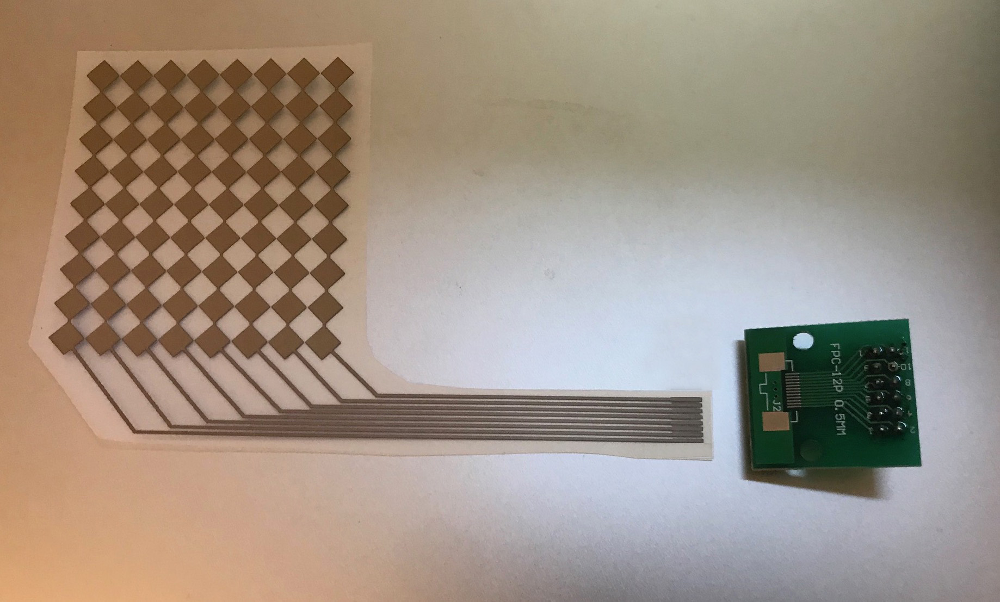
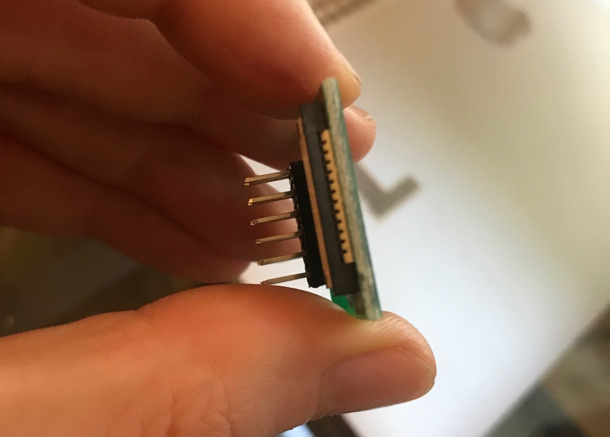
When you connect your FPC connector, note that it matters in which direction you insert the multi-touch pad wires into the FPC connector.
You have to insert it so that the conductive side with the silver traces is facing towards the breakout board.
Note that some of you may have a slightly different FPC connector since amazon ran out of stock for the first one we ordered.
Therefore depending on which FPC connector you have, you need to connect the inkjet printed circuit in the following way(s).
(1) Pull-out:

(2) Flip-up:
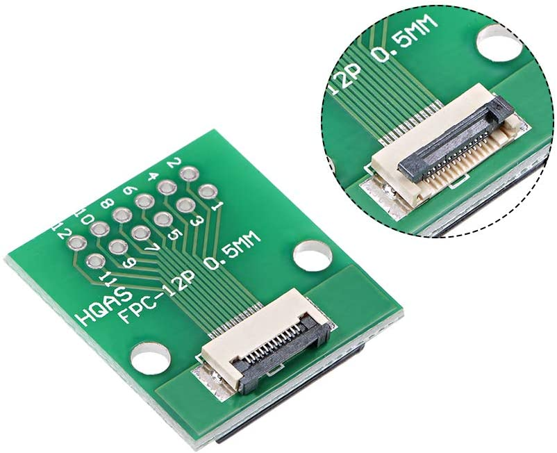
Once you are done connecting one side of the multi-touch pad, repeat the procedure with the other side and connect it to the second FPC connector.
(5) Multi-Touch Sensing Circuit
General Sensing Principle
Let's zoom out for a moment and look at the sensing principle of the multi-touch pad that we had discussed in lecture.
As mentioned in lecture, the multitouch pad consists of sender electrodes (e.g., columns) and receiver electrodes (e.g., rows).
Sender Electrodes: When powered, the multitouch pad is sending a signal to the sender electrodes one by one, i.e. first sends a signal to the first sender electrode, then the second, then the third and so on. After it reached the last sender electrode, it continues again from the front.
Receiver Electrodes: Meanwhile, the receiver electrodes listen to the signals. If a human finger comes in proximity of one of the receiver electrodes, the signal changes. The receiver electrode can detect this change. Since it knows which sender electrode was sending (column 0, or column 1, or column 2 etc.), the receiver knows where the finger is. So if row 2 is listening and knows that column 0 is sending a signal right now, but the signal looks higher than normal, row 2 knows that the finger is at row 2 column 0. If row 0 is listening and knows that column 0 is sending but the signal looks as expected, then there is no finger at row 0 column 0.
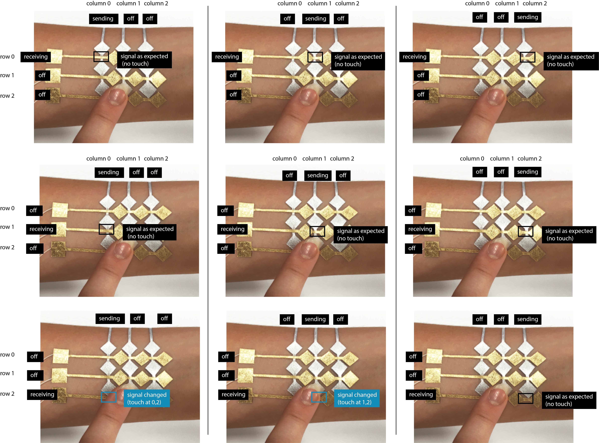
Circuit Design
Allright, so let's build the circuit for all of this.
Circuit for Receiving
Each new row has its one receiver pin and resistor. As you can imagine, the more rows you have, the more receiver pins you need, so this can quickly increase quite a bit. However, typically there are a lot of analog pins on our microcontrollers. If you look at the pin out below, you can see that our ESP has 9 specifically for capacitive touch sensing (it looks like 10 but remember do not use the one pin labeled as pin0 (TOUCH1) as receiver as explained in lab 1). In addition, we have another 6 regular analog-to-digital (ADC) converter pins, which would give a slightly less clean signal but would still produce something usable.
If you had a higher resolution multitouch pad, e.g., 20 x 20, you could use a component called a multiplexer to increase the number of receiver pins (more on this in a moment).
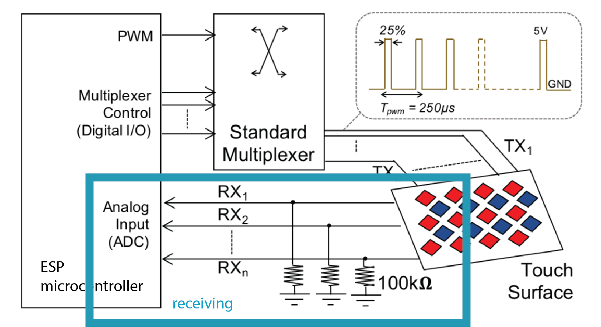
You see that each receiver pin is also connected to a 100kOhm pull-down resistor that leads to GND. This resistor has two functions. (1) It reduces any noise when there is no touch and the receiver pin should read 0V. Unfortunately, the printed sensor can catch electric noise from the environment or neighboring electrodes, which gets cleaned up by theses resistors. And (2) to reduces voltage spikes when the sensor gets touched. These spikes appear often when the sender electrode emits a box signal and not a sinusoidal wave.

Circuit for Sending
For sending, you cannot use a single pin like we did in the touch button lab, instead you need an individual sender pin for each of the columns.
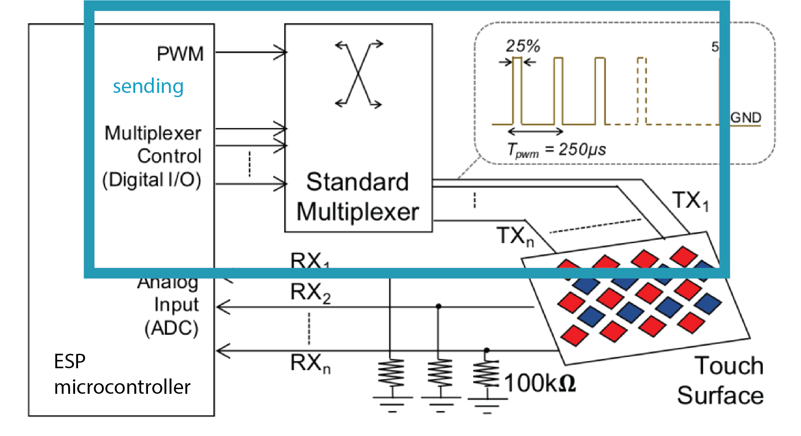
Remember, that you need to send a signal to each column of electrodes individually one after another, so sharing a sender pin would not allow for this since it would send a signal to all electrodes simultaenously at the same time.
To send a signal one by one to each column, you thus need the same number of sender pins as we have columns.
We will tell you more about this in pset2 when you write the actual sensing code, but just know that the multi-touch pad requires each sender pin to output a PWM signal.
Luckily, any of the GPIO pins on the ESP can output a PWM signal, so they are all suitable for being senders.
If we use all the GPIO for sending that we have not yet used for receiving, we could have up to 22 columns supported.
What is a Multiplexer?
If you looked closely, you saw that the sending circuit also has a multiplexer.
A multiplexer can be used to make the multi-touch pad more scalable.
With our current setup of a 8x9 multi-touch pad, we are already using up 17 pins on the ESP microcontroller (8 for receiving and 9 for sending).
If we had an even larger multi-touch pad, say 21x21, we would need at least 40 pins, which we don't have available on the ESP.
A multiplexer can help us solve this issue by reducing the number of pins needed to send and receive the signals.
A multiplexer can either take multiple inputs and direct them to a single output (multiplexing) or a single input and direct it to one of multiple outputs (de-multiplexing).
Below we show the working principle of a 1-to-3 channel de-multiplexer (take one input and output to multiple pins) for your reference.
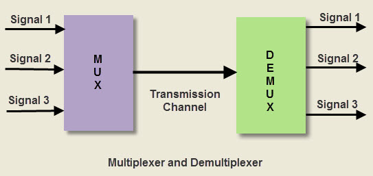
Thus, we could use the multiplexer to reduce the number of receiver pins by using it as a multiplexer and combining multiple rows into one pin on the ESP. Similarly, we can use the multiplexer to reduce the number of sender pins by using it as a de-multiplexer and using a single pin on the ESP to send a signal to multiple columns.
For the purpose of this pset, we will only use it for sending so you get some experience with how a multiplexer works.
For our multi-touch pad, we bought the following multiplexer from here.
If you look at your multiplexer, you can see that it has 16 channels (pins on the left side from C0-C15) that can be combined into one output line.
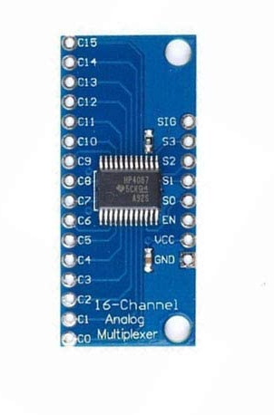
Multiplexing for Sender Pins: Telling the Multiplexer To Which Pin to Output the Signal
The question remains how to we tell the multiplexer which output pin our input signal should be directed to? Remember, we don't want to send the signal to all sender pins at the same time, we want to send it to the sender pins one after another.
So how can we tell the multiplexer to send the input signal to e.g., the C12 output pin.
The way our multiplexer does this, is by asking us to send the desired output address using the four pins on the right side, labeled (S0-S3). Why four pins? The multiplexer expects a binary signal, e.g. sending 0,0,0,0 to S0-S3 results in the output pin C0, vs. 0,1,1,0 send to to S0-S3 results in C6 as output pin.

The signal pin (SIG) is the pin that takes our PWM signal as input and VCC and GND are there to power the multiplexer.
Thus, this allows you to connect up to 16 pins to your system using only 5 pins (SIG + S0,S1,S2,S3) on the micro-controller!
For more details, see the datasheet and schematic file .
Multiplexer Soldering Header Pins on
The multiplexer we bought has no headers yet, so you need to add them yourself.
You have some header pins in your fabrication bag.
Go to an office hour to solder on the header pins.
After you are done soldering, it should look like this:

With all this knowledge in mind, build the final circuit and connect everything to the microcontroller.
You can connect the FPC connector breakout boards to the multiplexer via male-to-female jumper wires and breadboard.
Upload your Code and Design Files, Show Hardware to TA
For grading, please upload the following to your google drive student folder:
- the .pde file of your Processing program
- the two .pdf files you used for conductive inkjet printing
- 3-5 photos showing your assembled circuit from different perspectives (include top view + side views)
Grading
We will give 25 pts in total:
- does the Processing UI have input elements that correctly set the number of electrodes, size of electrodes, spacing of electrodes, wire thickness and spacing on the FPC connector or are these values hardcoded in the code? (5 pts)
- does the Processing UI have lower and upper bounds for each input field? are the selected lower and upper bounds well reasoned based on what makes sense given the hardware parts you have available for the pset, the sensing principle we use, and given that a human is touching the multi-touch pad? (5 pts)
- does the Processing UI export function export a drawing in the correct dimensions into two seperate .pdf files that are named correctly and that have the correct settings for conductive inkjet printing? are the toggle functions for showing/hiding layers implemented? (5 pts)
- did you finish assembling your multi-touch pad, i.e. did you inkjet print both the top and bottom electrode layer, glued them together, and connected the FPC chips? (5 pts)
- did you correctly build the multi-touch sensing circuit using the multiplexer, resistors and ESP? (5 pts)
Generating Fabrication Files